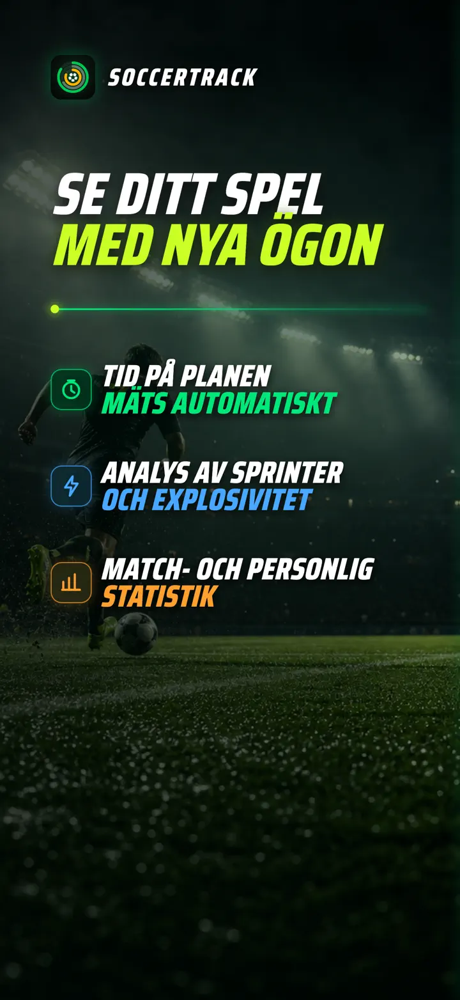
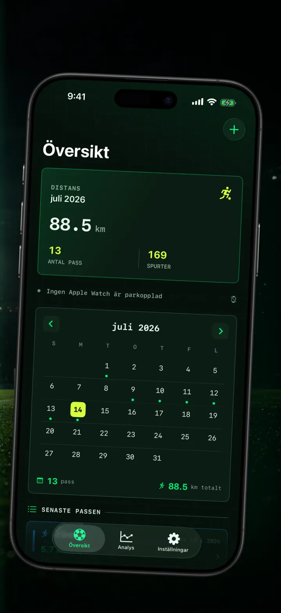
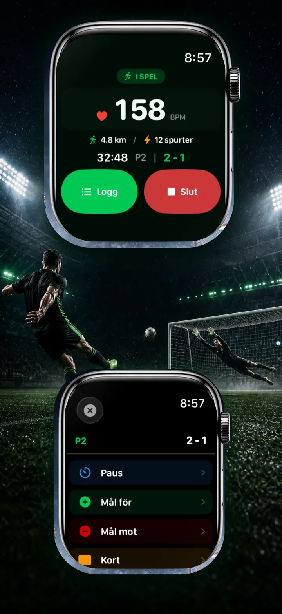
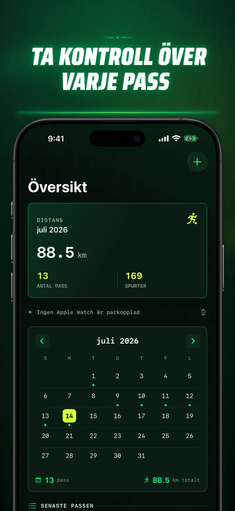
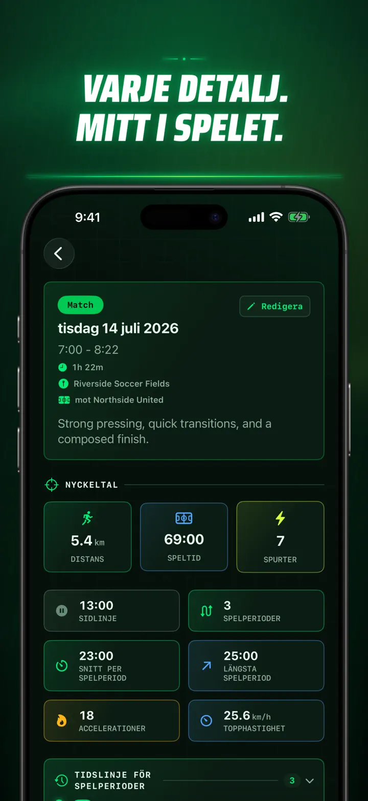
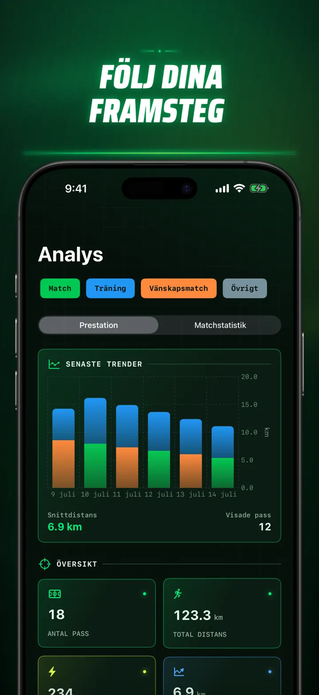
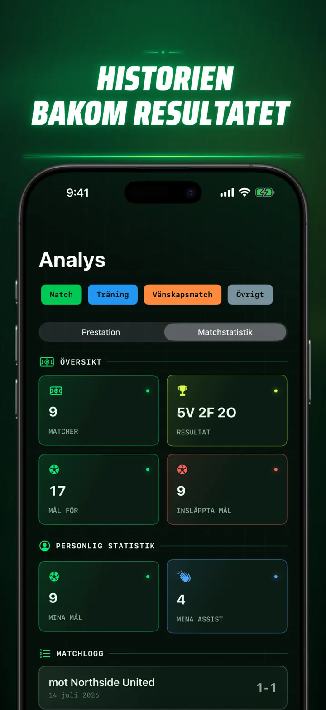
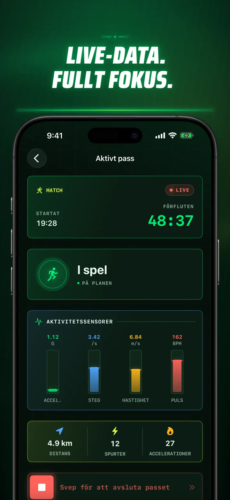
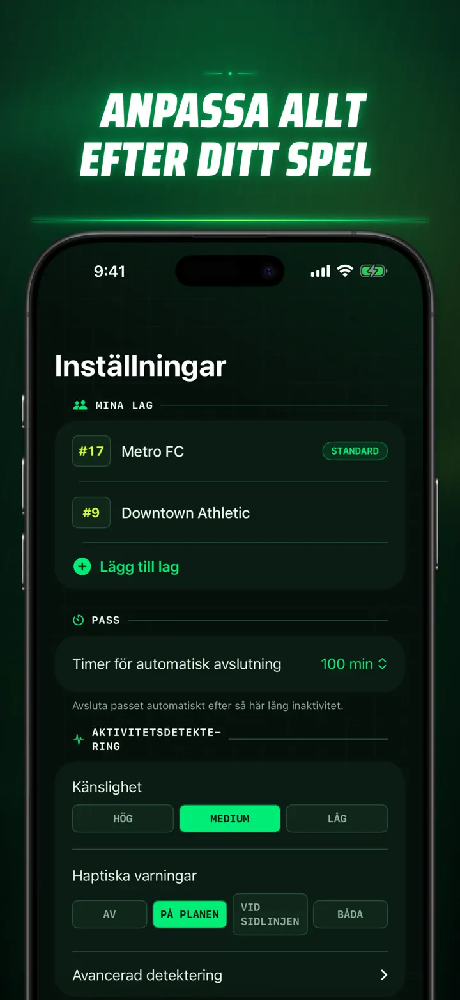
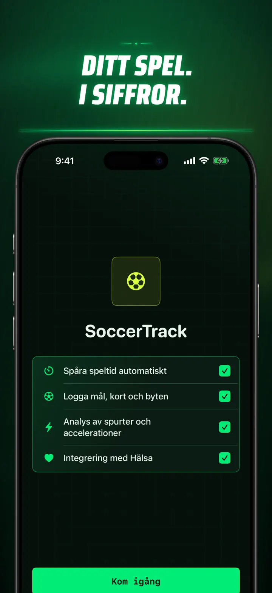

Soccer Time Track
Fotbollstid & matchanalys
Starta ett pass och spela. Apple Watch skiljer automatiskt plan- och bänktid och registrerar livedata, sprintar, matchhändelser och trender.
Hämta i App Store
Om appen
Se din match på ett nytt sätt.
Soccer Time Track gör Apple Watch till en matchtracker för spelare som vill förstå mer än slutresultatet. Starta från handleden, fokusera på spelet och se sedan en detaljerad bild av din prestation på iPhone.
AUTOMATISK TID PÅ PLANEN
Se när du verkligen var med i spelet. Rörelse-, tränings- och platssignaler hjälper till att skilja mellan spel, låg aktivitet och tid på bänken. Du får:
- Tid på planen och bänken
- Spelperioder och en tydlig tidslinje
- En detaljerad översikt över hur passet utvecklades
MATCHDAG FRÅN HANDLEDEN
Välj Match, Träning, Träningsmatch eller Annat. Registrera under spelet:
- Mål för och emot
- Dina mål och assist
- Gula och röda kort
- Byten och periodmarkeringar
DIN MATCH, MÄTT
Gå längre än minuter med bland annat:
- Distans
- Genomsnitts- och topphastighet
- Sprintar och högintensiva ruscher
- Puls och aktiva kalorier
- Kadens och acceleration
LIVEDATA, FULLT FOKUS
En parkopplad iPhone kan visa livedata medan Apple Watch fortsätter träningspasset. Du behåller fokus på matchen och dina data samlas in i bakgrunden.
SE DINA FRAMSTEG
Samla matcher, träningar, träningsmatcher och andra pass i en historik. Utforska trender och personliga rekord, jämför pass och lägg till lag, tröjnummer, motståndare, plats och anteckningar för att bevara berättelsen bakom varje resultat.
Behöver du data någon annanstans? Exportera pass, spelperioder och matchhändelser som CSV eller JSON.
SKAPAD FÖR APPLE WATCH OCH APPLE HEALTH
Med ditt tillstånd använder Soccer Time Track tränings-, puls-, rörelse- och platsdata för att skapa insikter och spara slutförda fotbollspass i Apple Health. Automatisk spårning kräver Apple Watch. Du kan också lägga till ett pass manuellt på iPhone.
DINA DATA, DIN MATCH
Dina pass stannar på dina enheter och, när iCloud-synkronisering är på, i din privata iCloud-databas. Soccer Time Track kräver inget konto, visar inga annonser och använder ingen tredjepartsanalys.
Sluta gissa hur mycket du spelade. Se vad du gjorde av tiden.
Integritetspolicy: https://masawata.net/SoccerTimeTrack/privacy-policy.html Användarvillkor: https://www.apple.com/legal/internet-services/itunes/dev/stdeula/
Skärmavbilder









Soccer Time Track
Starta ett pass och spela. Apple Watch skiljer automatiskt plan- och bänktid och registrerar livedata, sprintar, matchhändelser och trender.
Hämta i App Store